昨天下雪了
Hôm qua tuyết rơi rồi
24 mục từ, 3 bài khóa, 了, 太……了, cách nói về thời tiết và bệnh tình.
Khởi động
Mỗi ảnh là một câu riêng. Chọn từ phù hợp với hình.
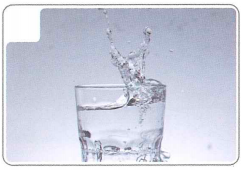
Ảnh 1
Ảnh 2
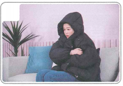
Ảnh 3
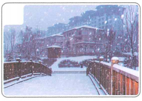
Ảnh 4
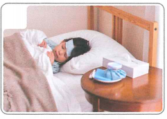
Ảnh 5
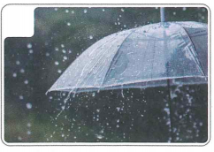
Ảnh 6
Cụm 1 · Từ vựng
9 từ trước Bài khóa 1.
Bài khóa 1 · 今天天气怎么样
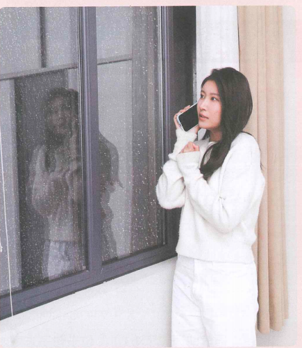
Ngữ pháp 1 · Câu phi chủ vị + 了 (1)
Câu phi chủ vị
Câu được tạo bởi từ hoặc cụm từ, không phân biệt rõ chủ ngữ và vị ngữ; thường dùng trong văn nói.
Trợ từ ngữ khí 了 (1)
了 đặt cuối câu hoặc chỗ ngắt để biểu thị sự thay đổi hoặc xuất hiện tình huống mới.
Trả lời phủ định thường dùng 没 và không dùng 了 cuối câu.
✏️ Luyện nhanh
Cụm 2 · Từ vựng
6 từ trước phần nghe Bài khóa 2.
Nghe trước Bài khóa 2
🎧 Nghe hội thoại hai lượt rồi chọn đáp án đúng
Bài khóa 2 · 昨天下雪了
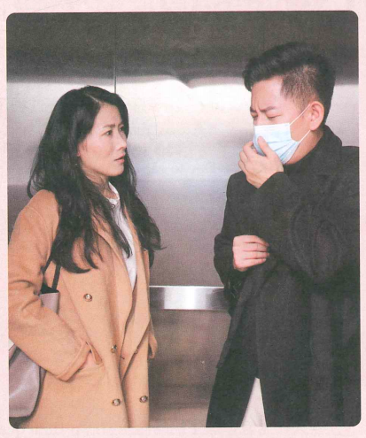
Đọc hiểu: ① 昨天天气怎么样？ ② 杨同乐昨天做什么了？
Ngữ pháp 2 · 太……了
Cấu trúc
太冷了！
这个杯子太小了。
我们今天太高兴了！
Ý nghĩa
Dùng để diễn đạt cảm thán về mức độ rất cao hoặc cảm nhận sâu sắc.
✏️ Luyện nhanh
Cụm 3 · Từ vựng
9 mục từ trước Bài khóa 3.
Nghe trước Bài khóa 3
🎧 Nghe hội thoại hai lượt rồi chọn đáp án đúng
Bài khóa 3 · 看病
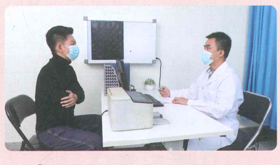
Đọc hiểu: ① 杨同乐生病了吗？ ② 看病后，杨同乐回家要做什么？
Củng cố · 看看 và 喝热水
看看
“看看” là hình thức lặp của 看, biểu thị hành động diễn ra trong khoảng thời gian ngắn.
喝些热水
Theo nội dung bài, người Trung Quốc thường khuyên uống nước ấm khi bị ốm và cho rằng nước ấm có lợi cho sức khỏe.
✏️ Luyện tập tổng hợp
Phần 1 · Chọn từ thích hợp điền vào chỗ trống
Chọn từ phù hợp cho từng câu. Mỗi câu là một bài tập riêng.
Phần 2 · Quan sát hình và hoàn thành câu
Mỗi ảnh là một câu bài tập riêng; ảnh được cắt thành file độc lập và giữ nguyên đầy đủ.
Câu 1
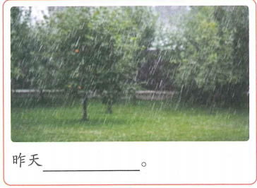
Câu 2
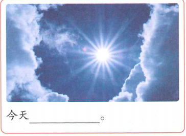
Câu 3
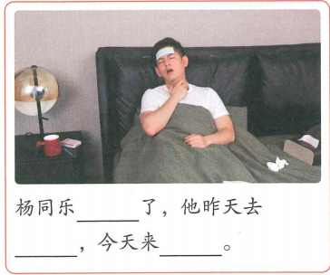
Câu 4
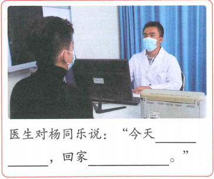
✅ Tổng kết
Bài 12 đã hoàn thành
- 24 mục từ, chia thành 3 cụm.
- 3 bài khóa với audio do giáo viên cung cấp.
- Nút Play + Pause ở mỗi phần nghe.
- Miêu tả thời tiết và tình trạng bệnh.
- Câu phi chủ vị.
- Trợ từ ngữ khí 了 (1).
- Cấu trúc 太……了.
- 看看 và lời khuyên 喝些热水.
Điểm luyện tập tổng hợp
Chỉ tính 4 câu hình ảnh ở phần luyện tập tổng hợp.